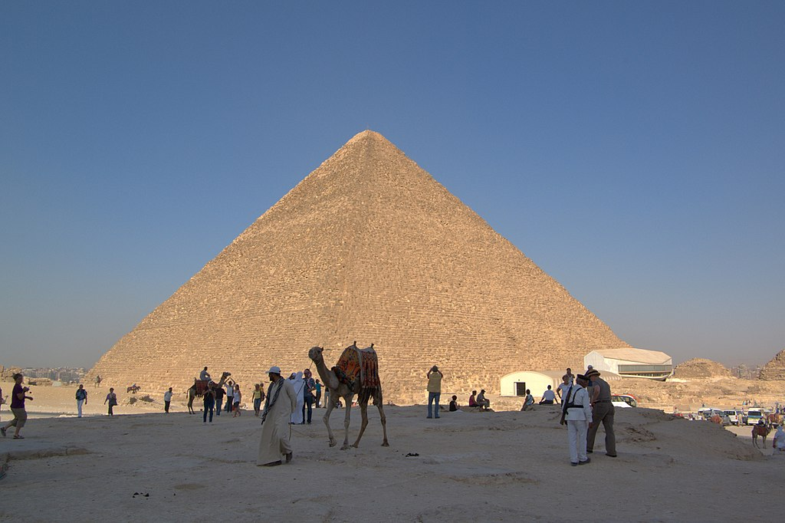

Piramidė yra seniausias iš septynių pasaulio stebuklų ir vienintelis, išlikęs iki mūsų dienų. Senovės Egipto laikais jos vardas buvo „Chufu horizontas“. Visa struktūra, kurios originalus aukštis buvo apie 146,65 m ir kvadratinio pagrindo kraštinės ilgis 235,5 m, užima 40 000 kvadratinių metrų plotą, yra pastatyta iš apie 2,3 mln. akmens luitų. Dabartinis piramidės aukštis − 137,38 m, jos išorinės sienos paklotos iš 203 akmenų eilių. Sienų polinkio kampas 51°51'. Nustatyta, kad piramidės perimetro ilgio santykis su jos aukščiu buvo lygus 2Pi skaičiui. Piramidė pastatyta itin tiksliai: jai paruošto pagrindo aukščio skirtumai neviršija 2,1 cm, o kraštinių ilgio didžiausias skirtumas yra tik 4,4 cm. Piramidės akmenų svoris vidutiniškai yra 2,5 tonos. Piramidė statyta aukštyn mažėjančiais akmenimis. Kai kurie pagrindo akmenys sveria iki 15 tonų. Sunkiausi akmenys yra piramidės viduje, faraono Cheopso laidojimo patalpos lubose. Tai didžiuliai granito blokai, kurie gali sverti 50−80 tonų ir yra skirti išskirstyti piramidės akmenų svorio jėgas virš faraono laidojimo patalpos. Originaliai piramidė buvo padengta balto kalkakmenio apdailos blokais, kurie nuardyti XIII a. statant dabartinio Kairo namus. Manoma, kad piramidę statė apie 100 000 žmonių ilgiau kaip 20 metų.
